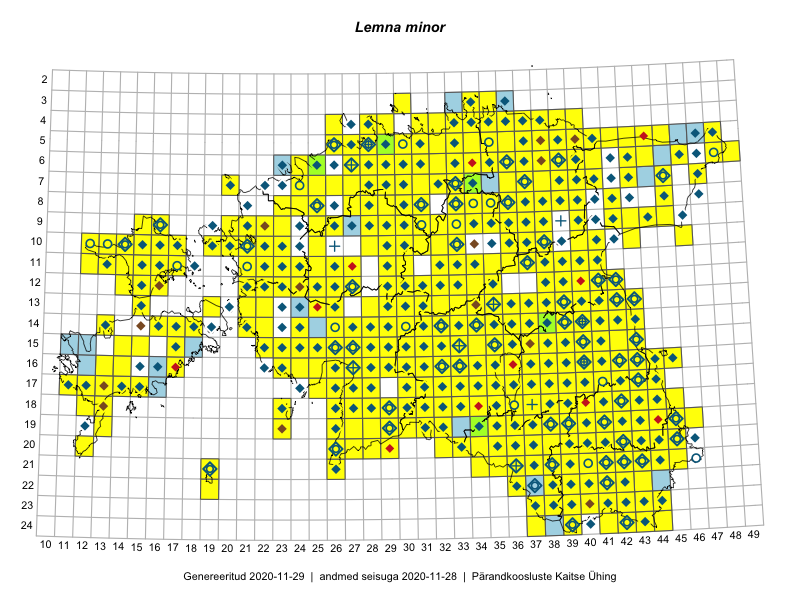

Lemna minor
Uuendatud: 2016-12-01
Kaardile koondatud taksonid: Lemna minor L.

Kaart põhineb 524 kirjel, neist vaatlusi 522 ja eksemplare 2.
Kuvatud viited 20 esimesele andmebaasikirjele, ülejäänud PlutoFis
- Peedu Saar, Timo Luhamäe: 2015-05-10: 12-30: ala
- Peedu Saar, Timo Luhamäe: 2015-05-10: 12-32: ala
- Peedu Saar, Timo Luhamäe: 2015-05-13: 06-39: ala
- Toomas Kukk, Eerik Leibak: 2015-08-09: 13-15: ala
- Thea Kull: 2015-07-07: 16-40: ala
- Rein Kalamees: 2015-06-08: 05-32: ala
- Peedu Saar, Toomas Kukk: 2015-05-28: 10-15: ala
- Peedu Saar, Toomas Kukk: 2015-05-27: 09-16: ala
- Toomas Kukk, Indrek Tammekänd: 2015-05-09: 14-28: ala
- Toomas Kukk, Peedu Saar: 2014-09-24: 06-40: ala
- Tiit Hallikma, Indrek Tammekänd, Toomas Kukk: 2015-06-09: 12-29: ala
- Tiit Hallikma, Toomas Kukk: 2015-07-21: 05-45: ala
- Toomas Kukk, Indrek Tammekänd: 2015-05-10: 12-33: ala
- Toomas Kukk, Raivo Kalle: 2015-05-13: 07-37: ala
- Toomas Kukk, Raivo Kalle: 2015-05-12: 11-40: ala
- Ott Luuk, Toivo Sepp: 2015-07-29: 09-31: ala
- Peedu Saar, Ott Luuk: 2015-06-21: 14-42: ala
- Toomas Kukk, Raivo Kalle: 2015-05-11: 09-37: ala
- Toomas Kukk, Raivo Kalle: 2015-05-11: 09-38: ala
- Peedu Saar: 2015-07-04: 18-45: ala